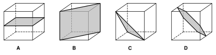
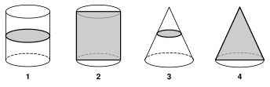
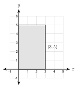
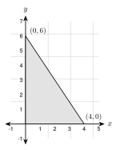
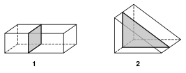

8.2 - Cross Sections and Solids of Revolution
A baker cuts a round loaf of bread. The cut face is a flat shape. A potter spins a lump of clay on a wheel. The clay becomes a round bowl.
Both jobs connect flat shapes and solids. A slice turns a solid into a flat shape. A spin turns a flat shape into a solid. In this lesson you learn to see both.
solid, polyhedron, face, edge, vertex of a solid, prism, pyramid, cylinder, cone, sphere, cross section, solid of revolution, axis of revolution
Printable Guided Notes for this lesson (fill-in notes to print and write on)
🔥 Warm Up
Find the area of a circle with radius \(5\). Give the exact answer.
A right triangle has legs \(6\) and \(8\). Find the hypotenuse.
Solve \(x + 8 - 12 = 2\).
👥 Learn Together
8.2.1 - Solids
A solid is a three-dimensional shape. These are the five solids we study.

A polyhedron has only flat faces. Prisms and pyramids are polyhedrons. Cylinders, cones, and spheres are not, because they have curved surfaces.
- A face is a flat surface.
- An edge is where two faces meet.
- A vertex of a solid is a corner where edges meet.
A prism has two parallel bases that are the same shape. A pyramid has one base and triangle faces that meet at a point. We name each by its base, such as a triangular prism or a square pyramid.
Example 1: Count the parts
Name the solid. Count its faces, vertices, and edges.
The two bases are triangles, so this is a triangular prism.
- Faces: \(2\) triangles and \(3\) rectangles, so \(5\) faces.
- Vertices: \(3\) on each base, so \(6\) vertices.
- Edges: \(3\) on each base and \(3\) going between them, so \(9\) edges.

A square pyramid. Faces: \(1\) square and \(4\) triangles, so \(5\). Vertices: \(4\) at the base and \(1\) on top, so \(5\). Edges: \(4\) at the base and \(4\) going up, so \(8\).
Leonhard Euler saw a pattern in these counts. Look at the last column.
| Solid | Faces \(F\) | Vertices \(V\) | Edges \(E\) | \(F + V - E\) |
|---|---|---|---|---|
| cube | \(6\) | \(8\) | \(12\) | \(2\) |
| triangular prism | \(5\) | \(6\) | \(9\) | \(2\) |
| square pyramid | \(5\) | \(5\) | \(8\) | \(2\) |
| pentagonal prism | \(7\) | \(10\) | \(15\) | \(2\) |
For a polyhedron with no holes, \(F + V - E = 2\).
Example 2: Use the pattern
A polyhedron has \(9\) faces and \(14\) vertices. How many edges does it have?
\[ F + V - E = 2 \]
\[ 9 + 14 - E = 2 \]
\[ 23 - E = 2 \]
\[ E = 21 \]
It has \(21\) edges.
\(8 + 12 - E = 2\), so \(20 - E = 2\), so \(E = 18\).
8.2.2 - Cross Sections
Imagine a plane (a flat sheet) cutting through a solid. The flat shape on the cut is the cross section. The shape depends on how you cut.
Example 3: Slicing a cube

Name the cross section in each cube.
- A: the plane is parallel to the top. The cross section is a square.
- B: the plane goes through two opposite edges. The cross section is a rectangle that is not a square.
- C: the plane cuts off a corner. The cross section is a triangle.
- D: the plane cuts through the middle of six edges. The cross section is a hexagon.
No. Cubes A and B are both cube slices, but B is a rectangle that is longer than it is wide. One example like this is a counterexample. It shows that “every slice is a square” is false.
Example 4: Slicing a cylinder and a cone

Name the cross section in each picture.
- 1: a cut parallel to the base of a cylinder is a circle.
- 2: a cut straight through the axis of a cylinder is a rectangle.
- 3: a cut parallel to the base of a cone is a circle (smaller than the base).
- 4: a cut through the apex and the center of the base of a cone is a triangle.
Every cut of a sphere is a circle.
Parallel to the base: a square, smaller than the base.
Straight down through the apex: a triangle.
Example 5: A slice of a sphere
A sphere has radius \(5\) in. A plane cuts it \(3\) in from the center. Find the area of the cross section. Give the exact answer and a decimal rounded to the nearest tenth.
The cross section is a circle. Look at the side view. The radius of the sphere (\(5\)) is the hypotenuse of a right triangle. One leg is \(3\). The other leg is the radius \(r\) of the cross section.
\[ r^2 + 3^2 = 5^2 \]
\[ r^2 = 25 - 9 = 16 \]
\[ r = 4 \]
\[ A = \pi r^2 = 16\pi \approx 50.3 \text{ square inches} \]
\(r^2 + 5^2 = 13^2\), so \(r^2 = 169 - 25 = 144\) and \(r = 12\).
\(A = 144\pi \approx 452.4\) square centimeters.
Example 6: Real slices
A deli cuts a round block of cheese. The block is a cylinder. The cut is straight across, parallel to the flat ends. What shape is each slice? Another cut goes at a slant through the block. What shape is that slice?
Parallel to the ends: a circle. A slanted cut makes a longer, rounder shape called an ellipse (an oval).
A circle. Every slice of a sphere is a circle.
8.2.3 - Solids of Revolution
Spin a flat shape around a line. The shape sweeps out a solid. The line is the axis of revolution. The solid is a solid of revolution.

| Flat shape | Spin around | Solid |
|---|---|---|
| rectangle | one side | cylinder |
| right triangle | one leg | cone |
| semicircle | its diameter | sphere |
Example 7: Spin a rectangle

The rectangle has vertices \((0, 0)\), \((3, 0)\), \((3, 5)\), and \((0, 5)\). It spins around the \(y\)-axis. Describe the solid.
The \(y\)-axis is the side from \((0, 0)\) to \((0, 5)\). The solid is a cylinder.
- The radius is the distance from the axis to the far side: \(r = 3\).
- The height is the length along the axis: \(h = 5\).
A cylinder. The side along the \(x\)-axis has length \(3\), so the height is \(h = 3\). The far side is \(5\) away from the axis, so the radius is \(r = 5\).
Example 8: Spin a triangle

The triangle has vertices \((0, 0)\), \((4, 0)\), and \((0, 6)\). It spins around the \(y\)-axis. Describe the solid. Find the slant height. Give the exact answer and a decimal rounded to the nearest tenth.
The solid is a cone. The radius is \(r = 4\) and the height is \(h = 6\).
The slant height \(\ell\) is the hypotenuse of the triangle (the slanted side of the cone):
\[ \ell^2 = 4^2 + 6^2 = 16 + 36 = 52 \]
\[ \ell = \sqrt{52} = 2\sqrt{13} \approx 7.2 \]
\(r = 5\), \(h = 12\). \(\ell^2 = 25 + 144 = 169\), so \(\ell = 13\).
✍️ Practice On Your Own
Name each solid.
It has two parallel circular bases and one curved surface.
It has five faces: one square and four triangles.
It has one circular base and one point (apex).
Faces, vertices, and edges.
A rectangular prism has how many faces, vertices, and edges?
A hexagonal prism has how many faces, vertices, and edges?
A polyhedron has \(10\) faces and \(16\) vertices. How many edges does it have?
A polyhedron has \(12\) edges and \(7\) vertices. How many faces does it have?
A student draws a solid with \(5\) faces, \(6\) vertices, and \(10\) edges. Use \(F + V - E\) to show that no polyhedron with no holes has these numbers.
Cross sections.

A plane cuts the rectangular prism (picture 1) parallel to its ends. What shape is the cross section?
A plane cuts the triangular prism (picture 2) parallel to its triangle ends. What shape is the cross section?
A cylinder is cut parallel to its bases. What is the cross section?
A cylinder is cut straight through its axis. What is the cross section?
A cone is cut parallel to its base. What is the cross section?
A cone is cut straight through its apex and the center of its base. What is the cross section?
Thu says, “Every slice of a cube is a square.” Give one slice of a cube that is not a square.
A sphere has radius \(10\) in. A plane cuts it \(6\) in from the center. Find the area of the cross section. Give the exact answer and a decimal rounded to the nearest tenth.
A sphere has radius \(25\) cm. A plane cuts it \(24\) cm from the center. Find the area of the cross section. Give the exact answer and a decimal rounded to the nearest tenth.
A cylinder has radius \(4\) ft and height \(10\) ft. It is cut straight through its axis. Find the area of the rectangle that you see.
Solids of revolution.
A rectangle with vertices \((0, 0)\), \((4, 0)\), \((4, 7)\), and \((0, 7)\) spins around the \(y\)-axis. Name the solid. Give its radius and height.
The same rectangle spins around the \(x\)-axis. Name the solid. Give its radius and height.
A triangle with vertices \((0, 0)\), \((3, 0)\), and \((0, 4)\) spins around the \(y\)-axis. Name the solid. Give its radius, height, and slant height.
The same triangle spins around the \(x\)-axis. Name the solid. Give its radius, height, and slant height.
A semicircle with radius \(6\) cm spins around its diameter. What solid does it make? What is the radius of the solid?
Which flat shape spins to make each object? (a) a soup can (b) a party hat (c) a basketball
Real situations.
Fatima cuts a round loaf of bread (a cylinder lying on its side) straight across, at a right angle to its length. What shape is each slice?
An orange is a sphere with radius \(4\) cm. Daniel cuts it through its center. Find the area of the cut face. Give the exact answer and a decimal rounded to the nearest tenth.
Test practice
A right triangle has legs \(5\) in and \(12\) in. The triangle spins around its \(12\) in leg. Which describes the solid it makes?
A. a cone with radius \(12\) in and height \(5\) in
B. a cone with radius \(5\) in and height \(12\) in
C. a cylinder with radius \(5\) in and height \(12\) in
D. a sphere with radius \(5\) inA plane cuts a cone parallel to its base, between the base and the apex. Which statement describes the cross section?
A. It is a triangle.
B. It is a rectangle.
C. It is a circle smaller than the base.
D. It is a circle the same size as the base.
Challenge
A polyhedron has \(12\) faces. Every face is a pentagon, and every edge is shared by two faces. How many edges does it have? How many vertices?
A plane cuts a cube so that the cross section is a regular hexagon (like cube D). How many of the cube’s faces does the plane cut through?